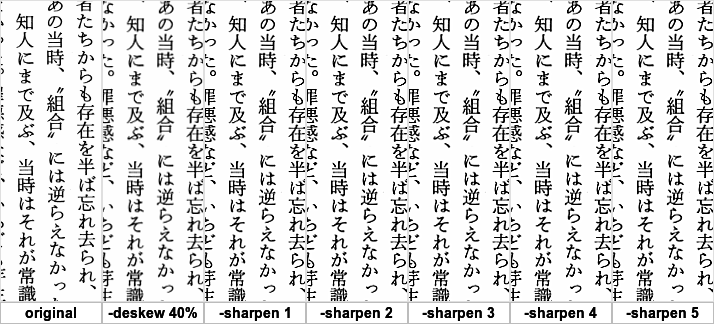

〜2014年6月下旬〜
convertのtrimは便利だがしつこいシミを消そうとfuzzの値を上げていくと、
思わぬところで食い込んでしまう。
blurでぼかしてしまえばfuzzの値はあまり大きくしなくてもよくなる。
ただ全体的にぼけてしまうのはいただけない。そこで例の-formatの出番だ。
% convert bar.png -blur 1 -fuzz 30% -trim -format "%wx%h%X%Y" info: 727x420+64+81
この結果を使って再度convertでcropすればぼけてないtrim画像へ変換できる。
% convert bar.png -crop 727x420+64+81 bar1.png
先日のように実行できる形式を吐かせて、shにそのまま食わせてもいい。
% convert bar.png -blur 1 -fuzz 30% -trim -format "convert %f -crop %wx%h%X%Y %t1.png" info: convert bar.png -crop 727x420+64+81 bar1.png % convert bar.png -blur 1 -fuzz 30% -trim -format "convert %f -crop %wx%h%X%Y %t1.png" info: | sh
2回convertを使うことになるが、結構シミには強くなる。
適当に-shapen 5とか使っていたが、これが結構時間食う。
というわけで1から5まで値を変えて画像を見てみる。
% mkdir -p deskew40 s{1..5}
% convert '{}' -deskew 40% +repage -verbose deskew40/'{}' ::: *.png
% parallel convert '{}' -sharpen 1 +repage -verbose s1/'{/}' ::: deskew40/*.png
57.57s user 4.63s system 361% cpu 17.199 total
% parallel convert '{}' -sharpen 2 +repage -verbose s2/'{/}' ::: deskew40/*.png
89.49s user 4.91s system 365% cpu 25.826 total
% parallel convert '{}' -sharpen 3 +repage -verbose s3/'{/}' ::: deskew40/*.png
136.69s user 4.88s system 366% cpu 38.604 total
% parallel convert '{}' -sharpen 4 +repage -verbose s4/'{/}' ::: deskew40/*.png
210.94s user 5.29s system 369% cpu 58.496 total
% parallel convert '{}' -sharpen 5 +repage -verbose s5/'{/}' ::: deskew40/*.png
335.51s user 6.38s system 372% cpu 1:31.84 total
% convert {,deskew40/,s{1..5}/}010.png'[100x300+100+100]' -border 1 +append \
\( -gravity center -size 100x20 label:original label:'-deskew 40%' label:'-sharpen '{1..5} -border 1 +append \) \
-append ~/jarp/images/sharpens.png

1で十分だな。2以上にしても違いがわからん。
たとえばfoo01.hoge.notwork.orgのように01から規則的に増えるホストがあった場合、
~/.ssh/configに
Host foo* HostName %h.hoge.notwork.org User hoge
のようなエントリーを用意すれば、
ssh foo50でちゃんとfoo50.hoge.notwork.orgへつないでくれるようだ。
% ssh -v foo50 OpenSSH_6.6.1, OpenSSL 1.0.1f 6 Jan 2014 debug1: Reading configuration data /home/eban/.ssh/config debug1: /home/eban/.ssh/config line 194: Applying options for foo* debug1: /home/eban/.ssh/config line 197: Applying options for * debug1: Reading configuration data /etc/ssh/ssh_config debug1: /etc/ssh/ssh_config line 19: Applying options for * debug1: Hostname has changed; re-reading configuration debug1: Reading configuration data /home/eban/.ssh/config debug1: /home/eban/.ssh/config line 194: Applying options for foo* debug1: /home/eban/.ssh/config line 197: Applying options for * debug1: Reading configuration data /etc/ssh/ssh_config debug1: /etc/ssh/ssh_config line 19: Applying options for * debug1: auto-mux: Trying existing master debug1: Control socket "/home/eban/.ssh/master-hoge@foo50.hoge.notwork.org:22" does not exist ssh: Could not resolve hostname foo50.hoge.notwork.org: Name or service not known
まあ、実際には存在しないので最終的には失敗するが、
何度か読み直して補完されてることがわかる。
gistに置いた。
参加者と本文を入れてみた。しかし参加者はメールアドレスが取れなかったので中途半端。
TTENDEE;ROLE=REQ-PARTICIPANT:#{e.RequiredAttendees}
DESCRIPTION:#{e.Body.gsub(/\r?\n/, '\n')}
本文は複数行になるが、改行は'\n'にすればok。
en_US.UTF-8の世界では大文字小文字は同一視されるようで、sortの並びが違う。
% mkdir tmp
% touch tmp/{a,b,A,B}
% ls tmp
A B a b
% LC_ALL=en_US.UTF-8 ls tmp
a A b B
% echo a b A B | xargs -n1
a
b
A
B
% echo a b A B | xargs -n1 | sort
A
B
a
b
% echo a b A B | xargs -n1 | LC_ALL=en_US.UTF-8 sort
a
A
b
B
変えなければ問題にならないが、commを使ってるときは注意。
sortされてないと見做されてしまう。
新しいバージョンのGNU Parallelがリリースされたようだ。
GNU Parallel - build and execute command lines from standard input in parallel - ニュース: GNU Parallel 20140622 ('Brazil') released [Savannah]
それはいいとしてなぜか
先日書いた記事がNewに載ってた。
ちょっとびっくりした。
なんか他にもいっぱいあるし見つけた記事をリリース時に紹介してるんだな。
世界ネコ歩きを見逃がさないために検索結果をRSSにしてiftttでメールを送ってるんだけど、
最近どうも本文がおかしい。NHK BSのはずがなぜかチャンネル銀河と出てくる。
どういうことかとRSSを直接見てみるとdescriptionがそうなっていた。
<item rdf:about="http://tv.so-net.ne.jp/schedule/400664201407021245.action?from=rss">
<title>岩合光昭の世界ネコ歩きmini「ネコパンチ」</title>
<link>http://tv.so-net.ne.jp/schedule/400664201407021245.action?from=rss</link>
<description>7/2 12:45～13:00 [チャンネル銀河 歴史ドラマ・サスペンス・日本のうた(Ch.664)]</description>
<dc:subject>
趣味／教育
</dc:subject>
<dc:date>2014-07-02T12:45+09:00</dc:date>
</item>
なんでそうなるの？って、ああ、本当にチャンネル銀河でやってるんだ。
そんなdescripionじゃ間違いだと思うじゃないか。
見れないのでiftttでNHKだけ通すようにしよう。
すでに名前で同じ構造を持つディレクトリへmvできないかと試していたが、
あらかじめ消さないかぎり無理だとわかった。
上書きでいいんだけど。次善の策としては--backup=numberedかな。
% LANG=C tree foo backups
foo
`-- bar
backups
`-- foo
`-- bar
1 directory, 2 files
% mv foo backups
mv: `foo' から `backups/foo' へ移動できません: ディレクトリは空ではありません
% mv --backup=numbered foo backups
% LANG=C tree backups
backups
|-- foo
| `-- bar
`-- foo.~1
`-- bar
2 directories, 2 files
失敗するよりはいいというだけだが。
split-windowしたら必ずselect-layout even-verticalするので、
だったらいっしょにしたらいいんじゃないかと
% tmux split-window; tmux select-layout even-vertical
としていたが、
% tmux split-window \; select-layout even-vertical
のように一度で済むようだ。
突然ではあるが、集計してみた。1月ぐらいから毎回聴くたびにカウントしていたのだ。
1 48 ハナミズキ / 一青窈
2 48 366日 / HY
3 47 恋するフォーチュンクッキー / AKB48
4 46 奏(かなで) / スキマスイッチ
5 42 春風 / Rihwa
6 39 RPG / SEKAI NO OWARI
7 32 レット・イット・ゴー ～ありのままで～ / 松たか子
8 31 グロテスク feat. 安室奈美恵 / 平井堅
9 30 小さな恋のうた / MONGOL800
10 29 栄光の架橋 / ゆず
2番目は聴いた回数である。
当初恋チュンが断トツかと思ったら、じわじわとハナミズキと366日が上がってついに先週逆転した。
この懐しい曲はうたまっぷとカラオケで強い。366日はさらにTSUTAYAでも強い。